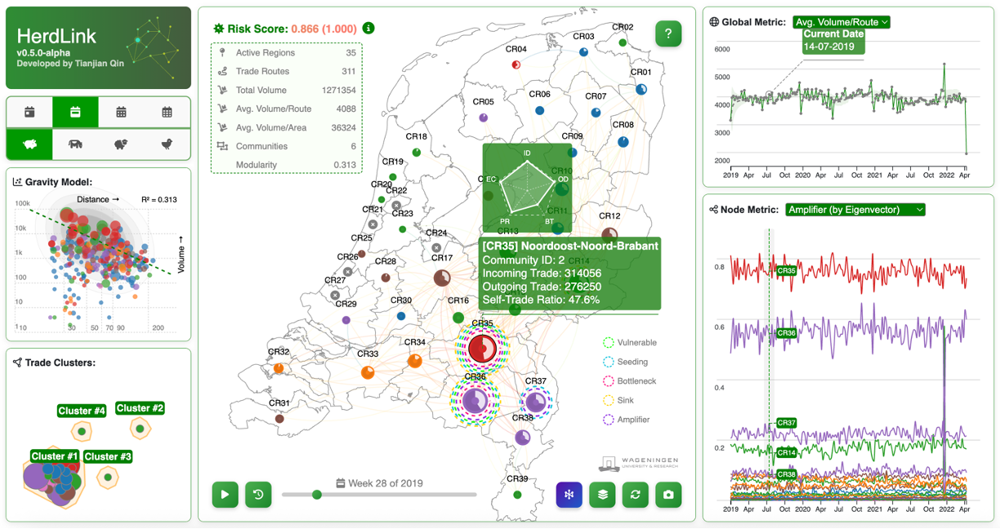

TL;DR
- HerdLink is a browser-based tool to explore Dutch livestock trade as a network (and as a map).
- It’s designed for quick “what’s going on here?” exploration: focus a node, inspect connections, and compare patterns over time.
- Keyboard shortcuts are built in so you can move fast without constantly reaching for the mouse.
What HerdLink is for
I built HerdLink because I kept wanting the same thing when looking at movement/trade data: a way to switch between network structure and geography without losing context. Tables and figures are great for details, but also painfully slow for pattern-finding.
HerdLink tries to make the first pass easy: pick a dataset, let it load, then explore. If something looks interesting, you can zoom in on a node, follow its links, close and re-enable some connections, and quickly compare what changes when you flip views or move through time.
How it feels to use
- Graph ↔ Map is one key away, so you can keep asking: “is this structure real, or just geography?”
- Focus mode keeps the interface uncluttered: click a node/region to zoom in on “just this story,” then exit when you’re done.
- Time controls let you replay temporalchanges rather than comparing static snapshots.
Shortcuts I actually use
- M Toggle Map / Graph
- Q Exit focus mode
- ↑ / ↓ Switch focal nodes
- ← / → Step through time (when time controls are available)
- Space Play / pause time replay
- F Jump back to the start
- R Restore links (after filtering/highlighting)
- S Export a screenshot
- H Toggle the help overlay
Project
Visit the project page for technical details:

HerdLink
NL livestock trade network analyzer — explore structure and geography side-by-side, with fast keyboard-driven navigation.
GitHub Open Source
What’s next
I’m still iterating on what matters most in practice: speed, clarity, more information, and a workflow that doesn’t fight you.